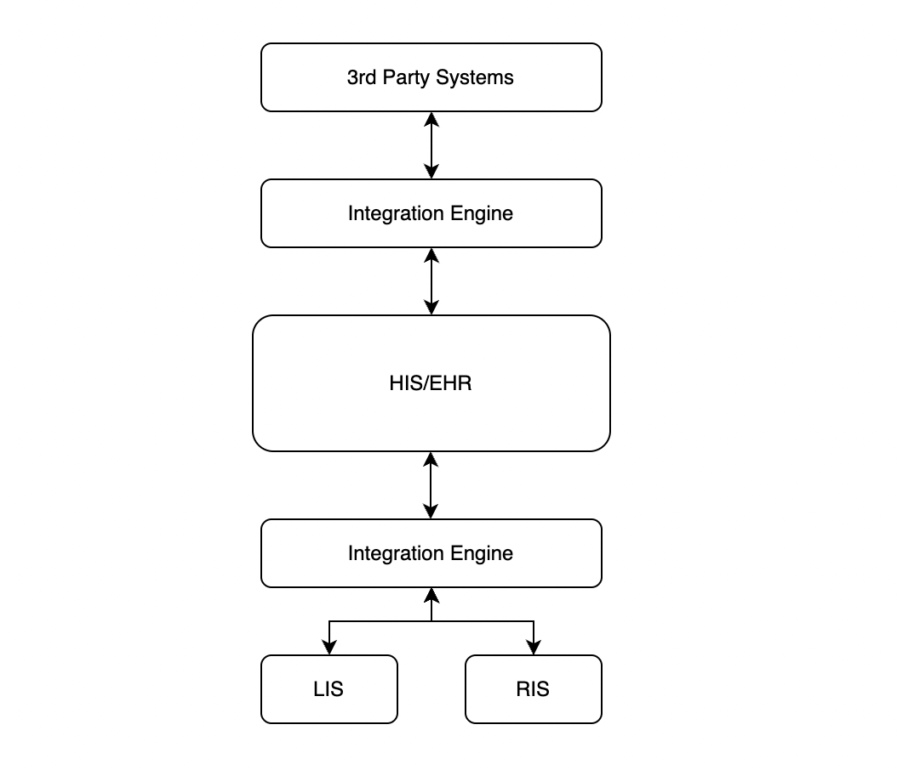
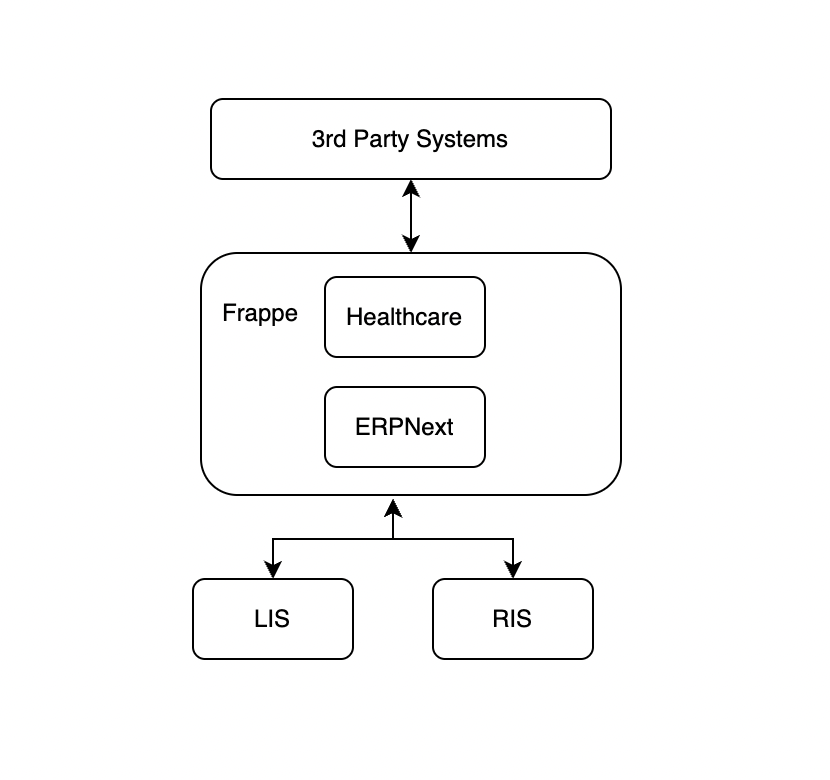

Using Frappe Framework As An Integration Engine
Introduction
In healthcare orgainsations, data exchange between systems is complicated and has interopolabilty issues. Integration engines are widely used in healthcare industry for bi-directional data transfer.
In this article, let us look at the advantages of using interface engines and how Frappe Framework can be used as an interface engine.
Integration Engines
In a traditional agile development approach, building a new interface might take weeks/months. With an integration engine, a new interface can be replicated in a matter of hours with little or no scripting at all.
Creating a REST API, listening to a webhook, transforming a data between channels, broadcasting a message, sending/receiving HL7 messages or any other commonly performed task can be implemented in integration engine without much effort.
Due to this integration engines like Mirth Connect are widely used in healthcare.

The above diagram shows usage of integration engine in a healthcare orgainsation.
Frappe Framework
Frappe Framework is a low code web application framework with batteries included. Even though Frappe is lablled as a framework, it can be used as an integration engine as well.
It provides REST APIs out of the box for all the models(called doctypes in Frappe). Users can create custom APIs using server scripts and it has support for webhooks as well.
Users can schedule custom cron jobs, setup emails, enable data transformations and other tasks without much coding.
One feature Frappe Framework lacks when compared to integration engines is sending/receiving HL7 messages on ad-hoc ports. This feature is not available out of the box. Users need to develop a custom app or use any 3rd party app for it.
Frappe Healthcare is an HIS system built on top of Frappe/ERPNext. If a hospital is using Frappe Healthcare, then there won't be a need to use integration engine as Frappe framework can take care of most of these things.

Conclusion
In healthcare, integration engines are used extensively to tackle data exchange between systems. Due to its low-code development and batteries included approach, even though Frappe is a web application framework, it can be used as an integration engine as well.